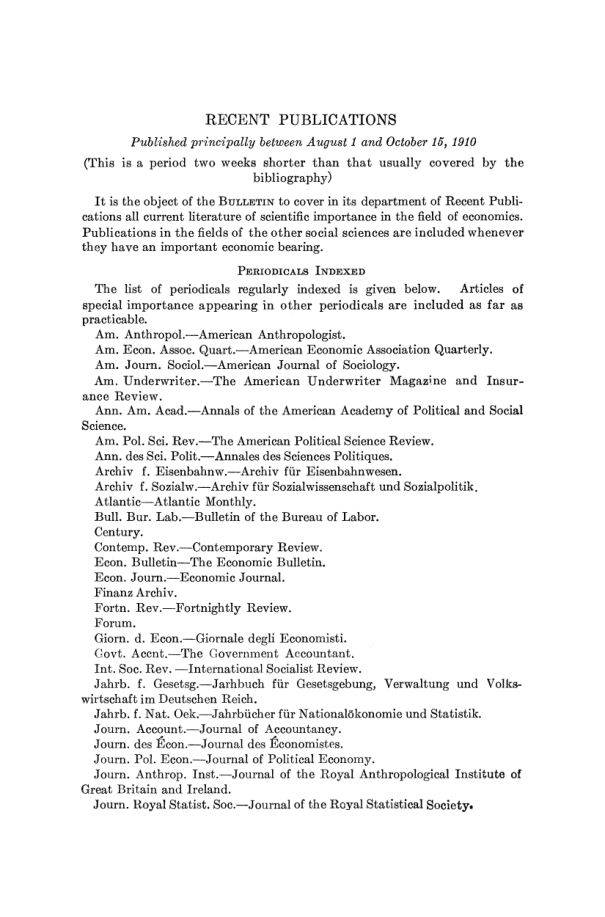

O último Bulletin, dezembro de 1910: a passagem para a AER
Leitura: 4 min
O último número anuncia a fusão com o Quarterly na American Economic Review e traz a conferência de Haia sobre letras de câmbio e 28 resenhas, com peso para a Comissão Monetária Nacional.


A primeira frase das notas de dezembro de 1910 é um aviso de encerramento.
“Este é o último número do Economic Bulletin.” (This is the last number of THE ECONOMIC BULLETIN)
Pela resolução da reunião anual anterior, o Bulletin e o Quarterly seriam fundidos, no início do ano seguinte, numa nova publicação trimestral, a American Economic Review. Um editor-gerente e seis editores associados assumiriam as funções do comitê de publicações e da equipe editorial do Bulletin.
A resolução previa um Bulletin ampliado e transformado em “uma revista semelhante… à da Royal Economic Society”. (a journal similar. . . to that of the Royal Economic Society)
O que mais contavam as notas?
O anúncio do presidente James confirma a reunião de St. Louis, de 27 a 30 de dezembro, com sessões sobre imigração, ricardianismo, moeda e preços, canais e hidrovias, pobreza, tarifas ferroviárias e tributação. Cinco outras associações provavelmente se reuniriam no mesmo lugar e data.
Em Haia, uma conferência internacional sobre letras de câmbio, com Charles A. Conant como delegado americano, aprovou um projeto de lei uniforme. Os delegados dos Estados Unidos e da Grã-Bretanha não o recomendaram, por causa da uniformidade já obtida entre as leis britânicas e as dos estados americanos, mas aceitaram submetê-lo aos legislativos.
As ferrovias criaram em Washington um Bureau of Railway Economics, com L. G. McPherson como diretor e Frank Haigh Dixon como estatístico-chefe. Taft nomeou uma comissão sobre a regulação federal dos títulos ferroviários, presidida por Arthur T. Hadley. William B. Dana, fundador do Commercial and Financial Chronicle, morreu em 10 de outubro.
As notas registram ainda a criação da National Association for the Advancement of the Colored People, à qual William E. B. DuBois passou a se dedicar, e a nomeação de Frank A. Fetter para a junta estadual de caridades de Nova York, a primeira de um economista acadêmico.
Que livros foram resenhados?
São 28 resenhas e uma carta. Walter F. Willcox abre a seção com Highways of Progress, de James J. Hill, estudos de economia aplicada centrados no desenvolvimento ferroviário do Noroeste americano.
O bloco mais denso trata dos relatórios da National Monetary Commission. H. P. W. resenha o volume de Davis R. Dewey e Robert E. Chaddock sobre os bancos estaduais antes da Guerra Civil e o de Andrew McFarland Davis sobre a origem do sistema bancário nacional. H. Parker Willis resenha o estudo de David Kinley sobre o uso de instrumentos de crédito e as estatísticas de 1867 a 1909 compiladas por A. Piatt Andrew.
M. B. Hammond resenha o relatório do Commissioner of Corporations sobre as bolsas de algodão, e H. S. Smalley, a monografia de John Maurice Clark sobre a razoabilidade na discriminação de fretes locais. Wm. B. Bailey resenha o manual elementar de Arthur L. Bowley.
Fecham a seção história do trabalho, conservação, saúde, sociologia, a carta de Charles Edward Woodruff contestando a resenha de Ellwood sobre seu livro, Latter-Day Problems, de J. Laurence Laughlin, resenhado por George Ray Wicker, e The Southern South, de Albert Bushnell Hart.
Como se organizava a bibliografia?
A seção Recent Publications cobre obras publicadas principalmente entre 1º de agosto e 15 de outubro de 1910, período duas semanas mais curto que o habitual, precedida da lista de periódicos indexados.
Na minha leitura
Na minha leitura, o número fecha uma fase editorial. O boletim de resenhas, notas e bibliografia daria lugar a um periódico geral no modelo da Royal Economic Society, com resumos de artigos de revistas em várias línguas, notas pessoais e resenhas.
No conteúdo, o peso da National Monetary Commission mostra onde estava a agenda. Antes de redesenhar o sistema bancário, encomendaram-se história bancária, estatísticas monetárias e um levantamento do uso de instrumentos de crédito. É uma boa ordem de trabalho: medir o sistema existente antes de propor outro.
Glossário
- National Monetary Commission
- comissão do Congresso americano encarregada de estudar a reforma monetária e bancária.
- Letra de câmbio
- ordem escrita e transferível de pagamento, usada no comércio interno e internacional.
- Safety fund
- sistema de fundo comum de garantia entre os bancos do estado de Nova York antes da Guerra Civil.
Artigos desta edição
- Personal and Miscellaneous Notes — editores (pp. 387–398). Anúncio do fim do Bulletin e de sua fusão com o Quarterly na American Economic Review, programa da reunião de St. Louis, conferência de Haia sobre letras de câmbio, Bureau of Railway Economics, nomeações e mortes. JSTOR
- James J. Hill, Highways of Progress — Walter F. Willcox (pp. 399–401). Estudos de economia aplicada, com capítulos sobre consolidações industriais e ferroviárias, comércio oriental e conservação do capital. JSTOR
- Charles Grove Haines, The Conflict over Judicial Powers in the United States to 1870 — F. J. Swayze (pp. 402–403). Relato histórico, nos Columbia University Studies, do conflito sobre os poderes do Judiciário nos Estados Unidos até 1870. JSTOR
- Hosea Ballou Morse, The Gilds of China, with an Account of the Gild Merchant or Co-Hong of Canton — John H. Gray (pp. 403–404). Estudo das guildas chinesas e de sua independência em relação às autoridades públicas. JSTOR
- Gifford Pinchot, The Fight for Conservation — Fernow (pp. 405). Coletânea de discursos e artigos em defesa da conservação dos recursos naturais. JSTOR
- Angelo Mariani, Geografia Economica Sociale dell'Italia — James B. Morman (pp. 405–406). Estudo da geografia italiana em relação ao desenvolvimento econômico e social do país. JSTOR
- B. Seebohm Rowntree, Land and Labor: Lessons from Belgium — James B. Morman (pp. 407–409). Volume abrangente sobre os principais aspectos da vida econômica e social da Bélgica. JSTOR
- John Maurice Clark, Standards of Reasonableness in Local Freight Discriminations — H. S. Smalley (pp. 409–410). Monografia sobre a razoabilidade das tarifas ferroviárias, com atenção especial aos fretes locais. JSTOR
- Commissioner of Corporations, Report on Cotton Exchanges, Parts I–V — M. B. Hammond (pp. 411–414). Relatório em três fascículos sobre as operações das bolsas de algodão, a classificação do algodão e o efeito dos contratos futuros sobre os preços. JSTOR
- John R. Commons e Helen L. Sumner, A Documentary History of American Industrial Society, suplemento ao vol. IV e vols. V e VI: Labor Movement, 1820–1840 — Ernest L. Bogart (pp. 414–416). Documentos sobre o movimento operário americano no período, com uma fase política (1828–1832) e outra sindical (1833–1837). JSTOR
- Davis R. Dewey e Robert E. Chaddock, State Banking before the Civil War and the Safety Fund Banking System in New York; Andrew McFarland Davis, The Origin of the National Banking System — H. P. W. (pp. 417–419). Dois relatórios históricos da National Monetary Commission, sobre os bancos estaduais e sobre a origem do sistema bancário nacional. JSTOR
- David Kinley, The Use of Credit Instruments — H. Parker Willis (pp. 419–421). Relatório da National Monetary Commission que retoma os estudos de 1896 sobre o uso de instrumentos de crédito, com questionário enviado pelo Comptroller of the Currency a todos os bancos. JSTOR
- A. Piatt Andrew (comp.), Statistics for the United States, 1867–1909 — H. Parker Willis (pp. 421–422). Volume de estatísticas compilado para a National Monetary Commission. JSTOR
- Arthur L. Bowley, An Elementary Manual of Statistics — Wm. B. Bailey (pp. 422–423). Manual para um curso elementar de teoria e prática da estatística. JSTOR
- W. Palin Elderton e Ethel M. Elderton, Primer of Statistics — W. B. B. (pp. 423–424). Introdução breve à teoria da estatística. JSTOR
- Camille Jacquart, La Mortalité Infantile dans les Flandres: Étude de Démographie Belge — John Cummings (pp. 424–426). Estudo demográfico da mortalidade infantil nas províncias belgas de Flandres Oriental e Ocidental. JSTOR
- Alfred Grotjahn, Krankenhauswesen und Heilstättenbewegung im Lichte der sozialen Hygiene — P. T. Dondlinger (pp. 426–429). Estudo dos hospitais e do movimento dos sanatórios do ponto de vista da higiene social. JSTOR
- A. Davies Edwards, Children of the Poor — S. M. L. (pp. 429). Descrição da vida das crianças pobres e dos meios de melhorar suas condições, por um médico do serviço escolar de Bournemouth. JSTOR
- Otto Warschauer, Zur Entwicklungsgeschichte des Sozialismus — Simon Litman (pp. 429–430). Revisão da obra e dos escritos dos primeiros socialistas franceses. JSTOR
- Michels-Lindner, Geschichte der modernen Gemeindebetriebe in Italien — R. C. B. (pp. 431). Estudo histórico das empresas municipais modernas na Itália. JSTOR
- Lampe, The Japanese Social Organization — William Elliot Griffis (pp. 432–433). Monografia em três partes: a história social, a estrutura social e a ordem social em mudança. JSTOR
- Charles Edward Woodruff, Expansion of Races (carta do autor) — Charles Edward Woodruff (pp. 433–435). Carta ao editor-gerente contestando pontos da resenha de Charles A. Ellwood publicada no vol. II do Bulletin, divulgada a pedido de Ellwood. JSTOR
- Roswell C. McCrea, The Humane Movement — Edward E. Pratt (pp. 436–437). Estudo em duas partes do movimento humanitário, preparado para a Henry Bergh Foundation, da Universidade Columbia. JSTOR
- A. H. Keane, The World's Peoples — Ulysses G. Weatherly (pp. 437–438). Manual popular de etnografia escrito para o leitor geral. JSTOR
- Charles F. Dole, The Ethics of Progress — Clinton Rogers Woodruff (pp. 438–439). Discussão da doutrina da boa vontade, que o autor considera a chave da teoria ética. JSTOR
- René Worms, Les Principes Biologiques de l'Évolution Sociale — C. A. E. (pp. 440). Monografia sobre a aplicação de princípios biológicos à evolução social. JSTOR
- F. Müller-Lyer, Phasen der Kultur und Richtungslinien des Fortschritts — Charles A. Ellwood (pp. 440–441). Panorama sociológico das fases da cultura e das direções do progresso. JSTOR
- J. Laurence Laughlin, Latter-Day Problems — George Ray Wicker (pp. 442–445). Reedição de textos do autor de divulgação econômica para o público geral. JSTOR
- George, The Junior Republic: Its History and Ideals — William Fremont Blackman (pp. 445–447). História e ideais da George Junior Republic, com introdução de Thomas M. Osborne. JSTOR
- Albert Bushnell Hart, The Southern South — William H. Glasson (pp. 447–450). Estudo dos problemas do Sul dos Estados Unidos, tratados também como problemas nacionais. JSTOR
- Recent Publications (pp. 451–501). Bibliografia corrente de obras publicadas principalmente entre 1º de agosto e 15 de outubro de 1910, precedida da lista de periódicos indexados, com livros e artigos por seção temática. JSTOR
Fontes
- Personal and Miscellaneous Notes (pp. 387–398). JSTOR · Internet Archive (PDF)
- [untitled] The Economic Bulletin, (1910-12-01), pages 399-401 (pp. 399–401). JSTOR · Internet Archive (PDF)
- [untitled] The Economic Bulletin, (1910-12-01), pages 402-403 (pp. 402–403). JSTOR · Internet Archive (PDF)
- [untitled] The Economic Bulletin, (1910-12-01), pages 403-404 (pp. 403–404). JSTOR · Internet Archive (PDF)
- [untitled] The Economic Bulletin (1910-12-01), page 405 (pp. 405). JSTOR · Internet Archive (PDF)
- [untitled] The Economic Bulletin, (1910-12-01), pages 405-406 (pp. 405–406). JSTOR · Internet Archive (PDF)
- [untitled] The Economic Bulletin, (1910-12-01), pages 407-409 (pp. 407–409). JSTOR · Internet Archive (PDF)
- [untitled] The Economic Bulletin, (1910-12-01), pages 409-410 (pp. 409–410). JSTOR · Internet Archive (PDF)
- [untitled] The Economic Bulletin, (1910-12-01), pages 411-414 (pp. 411–414). JSTOR · Internet Archive (PDF)
- [untitled] The Economic Bulletin, (1910-12-01), pages 414-416 (pp. 414–416). JSTOR · Internet Archive (PDF)
- [untitled] The Economic Bulletin, (1910-12-01), pages 417-419 (pp. 417–419). JSTOR · Internet Archive (PDF)
- [untitled] The Economic Bulletin, (1910-12-01), pages 419-421 (pp. 419–421). JSTOR · Internet Archive (PDF)
- [untitled] The Economic Bulletin, (1910-12-01), pages 421-422 (pp. 421–422). JSTOR · Internet Archive (PDF)
- [untitled] The Economic Bulletin, (1910-12-01), pages 422-423 (pp. 422–423). JSTOR · Internet Archive (PDF)
- [untitled] The Economic Bulletin, (1910-12-01), pages 423-424 (pp. 423–424). JSTOR · Internet Archive (PDF)
- [untitled] The Economic Bulletin, (1910-12-01), pages 424-426 (pp. 424–426). JSTOR · Internet Archive (PDF)
- [untitled] The Economic Bulletin, (1910-12-01), pages 426-429 (pp. 426–429). JSTOR · Internet Archive (PDF)
- [untitled] The Economic Bulletin (1910-12-01), page 429 (pp. 429). JSTOR · Internet Archive (PDF)
- [untitled] The Economic Bulletin, (1910-12-01), pages 429-430 (pp. 429–430). JSTOR · Internet Archive (PDF)
- [untitled] The Economic Bulletin (1910-12-01), page 431 (pp. 431). JSTOR · Internet Archive (PDF)
- [untitled] The Economic Bulletin, (1910-12-01), pages 432-433 (pp. 432–433). JSTOR · Internet Archive (PDF)
- [untitled] The Economic Bulletin, (1910-12-01), pages 433-435 (pp. 433–435). JSTOR · Internet Archive (PDF)
- [untitled] The Economic Bulletin, (1910-12-01), pages 436-437 (pp. 436–437). JSTOR · Internet Archive (PDF)
- [untitled] The Economic Bulletin, (1910-12-01), pages 437-438 (pp. 437–438). JSTOR · Internet Archive (PDF)
- [untitled] The Economic Bulletin, (1910-12-01), pages 438-439 (pp. 438–439). JSTOR · Internet Archive (PDF)
- [untitled] The Economic Bulletin (1910-12-01), page 440 (pp. 440). JSTOR · Internet Archive (PDF)
- [untitled] The Economic Bulletin, (1910-12-01), pages 440-441 (pp. 440–441). JSTOR · Internet Archive (PDF)
- [untitled] The Economic Bulletin, (1910-12-01), pages 442-445 (pp. 442–445). JSTOR · Internet Archive (PDF)
- [untitled] The Economic Bulletin, (1910-12-01), pages 445-447 (pp. 445–447). JSTOR · Internet Archive (PDF)
- [untitled] The Economic Bulletin, (1910-12-01), pages 447-450 (pp. 447–450). JSTOR · Internet Archive (PDF)
- Recent Publications (pp. 451–501). JSTOR · Internet Archive (PDF)
- Sumário da edição no JSTOR: The Economic Bulletin, vol. 3, nº 4.
Documento em domínio público (EUA, publicado antes de 1931), via JSTOR Early Journal Content e Internet Archive. Resumo e comentário do autor deste site, sem afiliação com a American Economic Association. Encontrou um erro? Escreva: a correção é publicada no próprio texto, com data.
← Nº 110 · Mason, 1910: a seda americana, filha da tarifa Nº 112 · A primeira American Economic Review: tarifas, juros e irrigação →